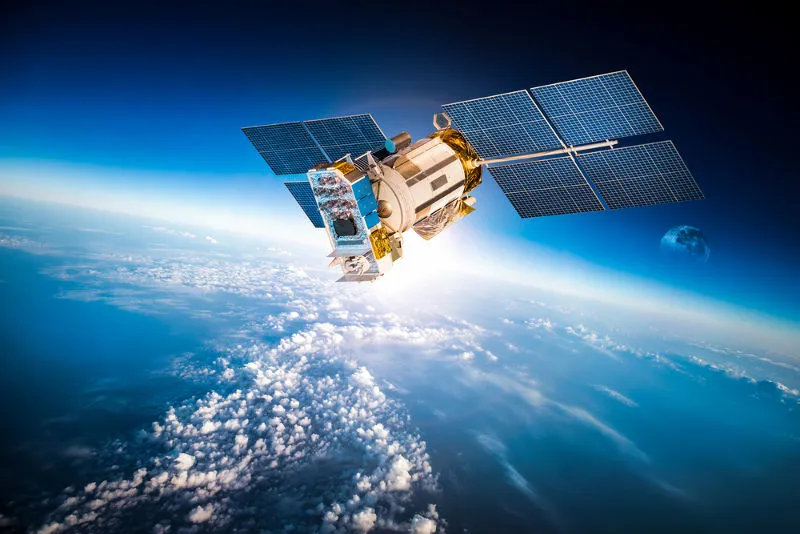

O QUE É UM SATÉLITE?
VOLTAR Os satélites são corpos celestes que orbitam corpos maiores, existem satélites naturais e artificiais.O termo “satélite” que vamos conhecer é um sistema formado por módulos, que fica na órbita da Terra ou de qualquer outro planeta, mantendo velocidade e altitude constantes.